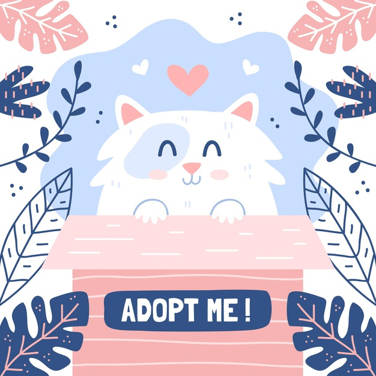
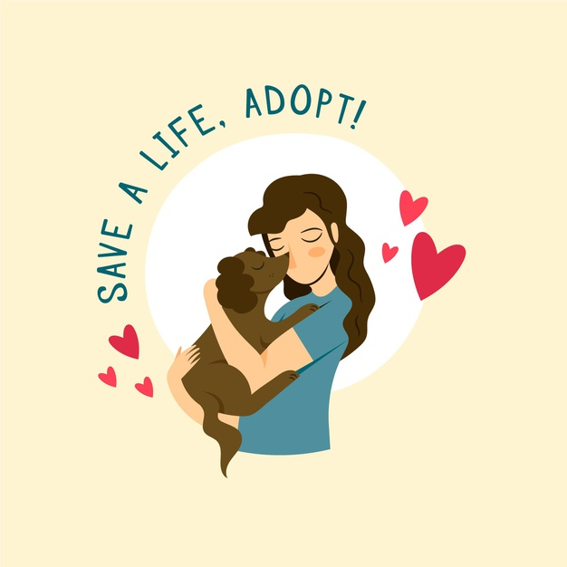
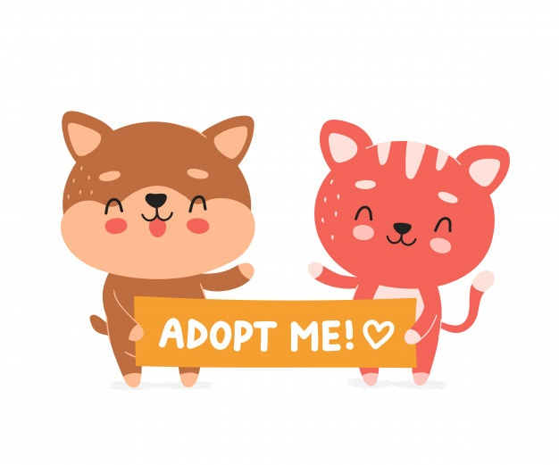
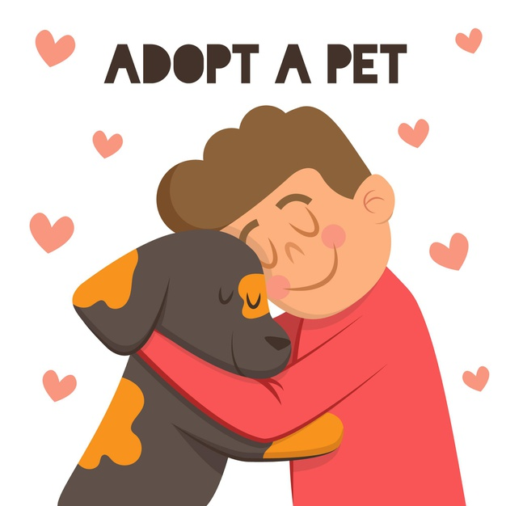
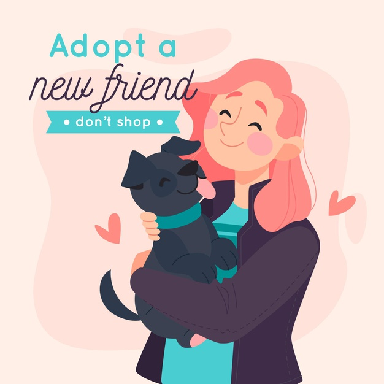

Why you should adopt?

Most of the puppies,kittens and other baby animals that are sold in pet stores often originate from what are
called- mills,which are made only for commercial purposes that focus on increasing profit with little regard
for the health and welfare of the animals.Practices and conditions in most mills are unethical and downright
repugnant in many cases.The animals are made to live in filthy conditions without adequate food, water or
veterinary care.Female animals are bred at every opportunity with little to no recovery time between litters.
Inbreeding is also a huge problem.Because of these conditions, mills often produce animals with serious health
problems down the road and this translates to hefty vet bills for you. Many pet stores also don’t socialize
their animals, which can lead to potential behavioral problems that aren’t ideal for a family pet. Adopting a
pet, however, has a ton of advantages.
Advantages of adopting
1.You will be saving a life!
Millions adoptable dogs and cats are euthanized each year because
there are more people giving their pets to shelters than people adopting. By adopting a shelter pet, you are
guaranteeing that at least one fewer adoptable animal will be euthanized this year due to lack of space. Not
only is this great news for the pet you adopt, but it’s also very personally rewarding to know that your pet
is alive and happy because of your decision.

2.Most shelter animals are already house -trained!
Because so many shelter animals have previously lived in homes, there’s a good chance you’ll be able to find
a pet that’s already house trained and knows how to be on their best behavior. This is great news for owners
who don’t have a lot of experience training pets or much time to devote to house training.
3.You will indirectly NOT be supporting animal cruelty!
You choosing to adopt instead of buying results in lesser money for mills.If a huge amount of pets are
adopted,this could help us in bringing down the exploitative mills

4.You will save money
Although adopting a shelter pet isn’t free, you get more for what you pay for than if you buy say a dog
from a pet store or an online seller. In most cases, pets who come from shelters have been given their
shots, were previously spayed or neutered, and have had microchips inserted in case the dog happens to get
lost. You’ll probably at most pay around a few thousand rupees(or even lesser) to adopt a dog from a
shelter, including the cost of both the dog and all of these treatments. Compare that to the money required
to purchase a dog, as well as paying for all of the treatments on top of that, and it’s clear which is the
most economical choice.
5.You Won’t Support Puppy Mills
Some pet stores and online retailers sell dogs that were bred in puppy mills, despite the terrible
conditions both the breeding dogs and their puppies are kept in. The puppies that are bred into puppy mills
are housed in cramped, unsanitary conditions that lead to disease and behavioral issues. Some puppies that
come from mills are afraid of humans or other dogs, and can even develop extreme aggression, which you
wouldn’t know without meeting the dog first.

6.You can choose a pet of any age
Although puppies and kittens are cute, they can require a lot of work to train. An adult or older pet that
is already trained may be a better fit for your lifestyle. For example, adopting an adult dog that is
already housetrained and knows basic commands is often much easier than adopting a puppy.
7.You will have a support system offered by the
organisation
Rescue groups often provide support for new owners because keeping pets in good homes is in the best
interest of these groups. So if you are worried about health issues, want advice on what kind of dog food to
buy, or have other newbie questions, the shelter staff will probably have opinions and advice to share.

8.Your adoption donation helps animals
Rehoming centres are by their very nature, 'non-profit' organisations. The adoption fee (donation) you pay
when you adopt goes towards helping the animals (neutering, vaccinations, vet bills, food, litter, bedding
etc) and not to line someone’s pocket.